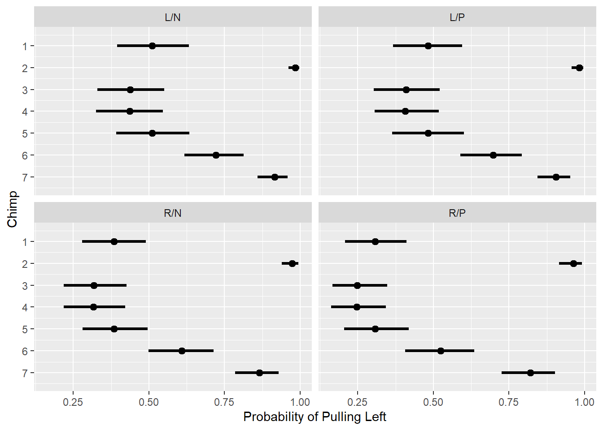
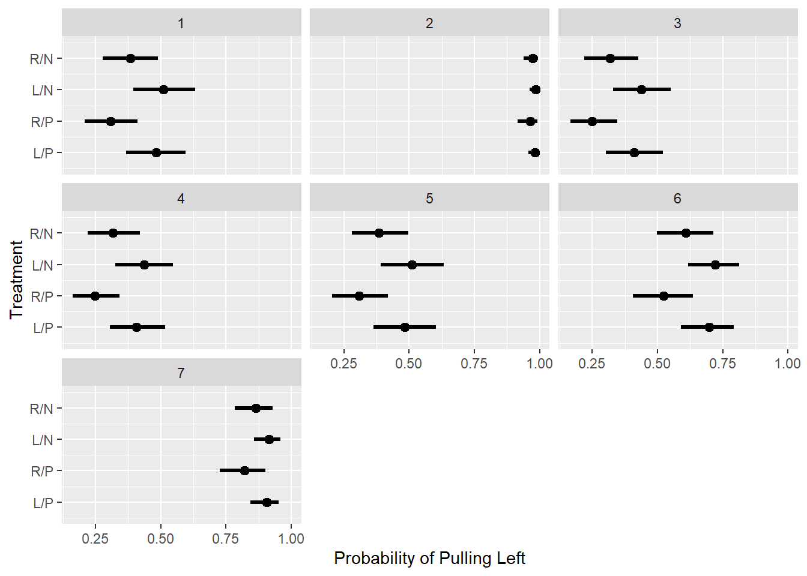
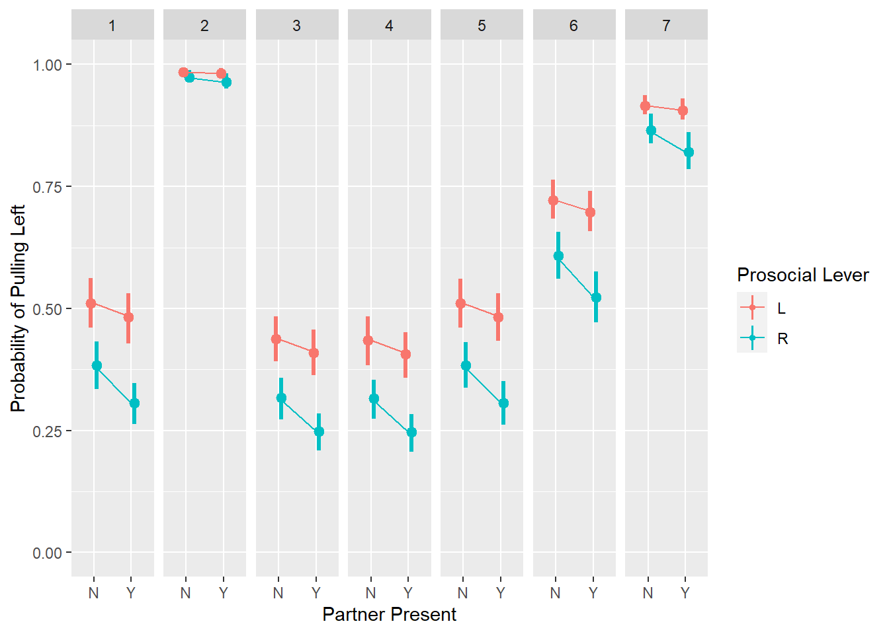
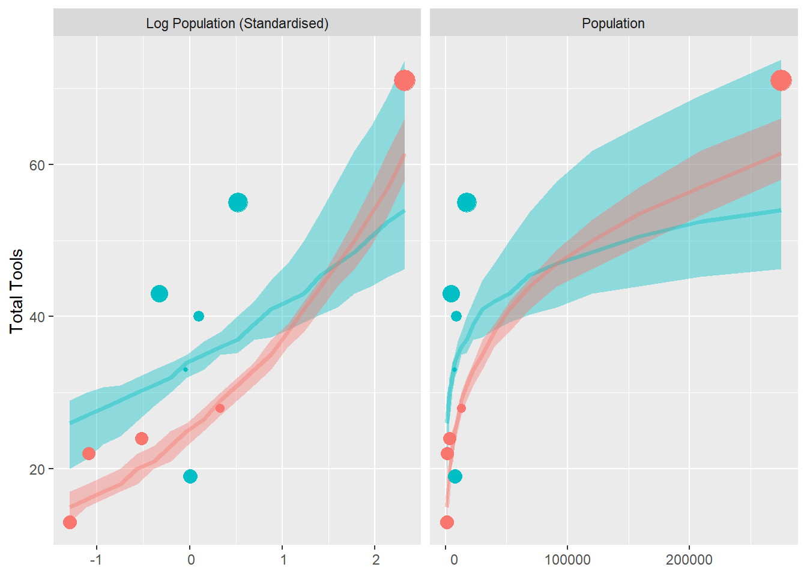
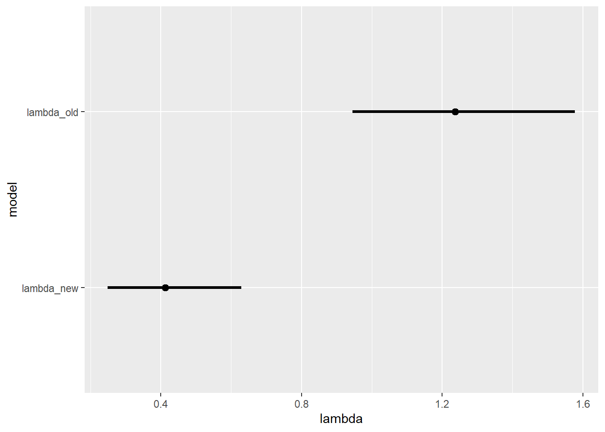

Chapter 11 God Spiked the Integers
11.1 Chapter Notes
This chapter is about two kinds of count models - binomial and Poisson. Binomial regression is used when our outcome is binary and there is a (possibly, but not necessarily, known) fixed total for the two categories. Poisson regression is used when we have a count without a fixed maximum.
We’re going to need the inverse logit (or logistic) function:
Binomial Regression
The chapter introduces a case where we might want to use logistic regression. It describes an experiment in which chimpanzees were given the option to pull one of two levers (left or right). Each lever would deliver a tray to the chimpanzee, and also to the opposite end of the table where a partner chimpanzee may or may not be sitting. In all cases the trays delivered to the lever-pulling chimpanzee would contain food, but only one of the levers would deliver food to the partner. The aim of the experiment was to determine whether chimpanzees were more likely to pull the lever that delivers food to the other end of the table if a partner chimpanzee was present.
We start by loading the data and defining an index variable (“treatment”) that takes digits 1-4 with the following meaning:
- Right-hand lever delivers food to both ends of the table, and no partner is present.
- Left-hand lever delivers food to both ends of the table, and no partner is present.
- Right-hand lever delivers food to both ends of the table, and a partner is present.
- Left-hand lever delivers food to both ends of the table, and a partner is present.
We model the outcome that the left lever is pulled like so:
\[ \begin{aligned} L_i &\sim \text{Binomial}(1,p_i) \\ \text{logit}(p_i) &= \alpha_{actor[i]} + \beta_{treatment[i]} \\ \alpha_j &\sim \text{Normal}(0,1.5) \\ \beta_k &\sim \text{Normal}(0,0.5) \end{aligned} \]
In Stan:
code_m11_4 <-
"data{
int<lower = 1> n;
int pulled_left[n];
int treatment[n];
int actor[n];
int<lower = 0, upper = 1> posterior; // a switch to evaluate the likelihood
}
parameters{
vector[7] a;
vector[4] b;
}
model{
vector[n] p;
b ~ normal( 0 , 0.5 );
a ~ normal( 0 , 1.5 );
for ( i in 1:n ) {
p[i] = a[actor[i]] + b[treatment[i]];
p[i] = inv_logit(p[i]);
}
if(posterior==1){
pulled_left ~ binomial( 1 , p ); // here I've implemented the switch
}
}"
compile_m11_4 <- stan_model(model_name = "m11_4", model_code = code_m11_4)
m11_4 <- sampling(compile_m11_4,
data = c(compose_data(data_chimp), posterior = list(1) ), chains=4, cores=parallel::detectCores())%>%
recover_types()
# saveRDS(m11_4,file="models\\m11_4.rds")After transforming them into the outcome scale, we can plot the parameters that represent each actor (i.e. each chimpanzee). There are seven in the experiment.
There are a couple of ways we could do this. We could plot the sampled \(\alpha\) parameters on the log-odds scale (i.e. un-transformed):

On this scale, an \(\alpha\) of 0 means that the parameter doesn’t suggest a propensity to pull either the left or right lever. Transformed into the probability space, the inverse logit of 0 is 0.5. High-values of \(\alpha\) increase the probability of pulling left, and large negative values increase the probability of pulling right.
Another way to display the model results by actor is to take all of the sampled \(\alpha\) and \(\beta\) pairs and transform them to the probability space, then group them by actor and display:
draws_chimp <- spread_draws(m11_4, a[i],b[j],ndraws = 1000)%>%
mutate(linpred = a+b,
p = inv_logit(linpred))
draws_chimp%>%
group_by(i)%>% # mean_qi() uses the groups in the data frame
mean_qi(p, .width=0.89)%>% # so this function returns 7 ranges for p, not just 1
ggplot(aes(y = i, x = p, xmin = .lower, xmax = .upper)) +
geom_pointinterval()+
ylab("Chimp")+
xlab("Probability of Pulling Left")+
scale_y_reverse(breaks=1:7)
This plot displays the probability that each chimp pulls the left lever, averaging over all the treatments. One interesting difference compared to the last plot is how different the variances look when transformed into the probability space. Actor 2 for example, only every pulled the left lever in the experiments, and so the model is quite confident about them. However just looking at the raw \(\alpha\) parameter, this confidence is not at all obvious - the model looks quite uncertain.
Another way to plot this same data is to facet by the four treatment, instead of averaging over them:
treatments <- c("R/N", "L/N", "R/P", "L/P")
draws_chimp%>%
group_by(i,j)%>% # grouping as above
mean_qi(p, .width=0.89)%>% # this contains 7 * 4 ranges for p
mutate(treatment = treatments[j])%>%
ggplot(aes(y = i, x = p, xmin = .lower, xmax = .upper)) +
geom_pointinterval()+
facet_wrap(~treatment)+
ylab("Chimp")+
xlab("Probability of Pulling Left")+
scale_y_reverse(breaks=1:7)
Here:
- L means the left-hand lever delivers food to both ends of the table, R the opposite.
- P means a partner is present, N the opposite.
The plot in the chapter works differently to the above. It plots the inverse logit of the \(\alpha\) parameter directly. Since the value of \(p\) is the inverse logit of the sum of \(\alpha\) and \(\beta\) parameters, the inverse logit of \(\alpha\) alone is the probability of the actor pulling the left lever if the treatment parameter was 0 - i.e. had no lean either way. However, I’m not sure this works since the \(\alpha\)s and \(\beta\)s are sampled together- does it make sense to set \(\beta\) to 0 like this? Need to think more about this.
In any case, here’s the same plot for the treatment effects:
draws_chimp%>%
group_by(i,j)%>%
mean_qi(p, .width=0.89)%>%
ggplot(aes(y = j, x = p, xmin = .lower, xmax = .upper)) +
geom_pointinterval()+
facet_wrap(~i)+
ylab("Treatment")+
xlab("Probability of Pulling Left")+
scale_y_reverse(breaks=1:4, labels=treatments)
The experiment is to test pro-social behaviour in chimps. If the chimps exhibited pro-social behaviour, we’d expect that the pro-social lever would be pulled more often in the presence of a partner. I.e. we want to compare R/P against R/N, and L/P against L/N. I’ve done this via a plot but it looks like the tidybayes function compare_levels() would allow a quick numerical comparison.
Here’s a plot of the model predictions:
partner_status <- c("N","N","Y","Y")
prosocial_lever <- c("R","L","R","L")
draws_chimp%>%
group_by(i,j)%>%
mean_qi(p, .width=0.5)%>% # 50% intervals
mutate(partner_status= partner_status[j],
`Prosocial Lever`=prosocial_lever[j])%>%
ggplot(aes(x=partner_status,y=p,ymin = .lower, ymax = .upper, colour=`Prosocial Lever`))+
geom_pointinterval(position = position_dodge(width=0.3))+ # so the intervals don't overlap
geom_line(aes(group=`Prosocial Lever`))+ # the grouping ensures the lines connect the right dots
facet_wrap(~i, nrow=1)+
xlab("Partner Present")+
ylab("Probability of Pulling Left")+
ylim(0,1)
We have seven frames, one for each chimp. The vertical lines are the 50% intervals. Pro-social behaviour here would mean that as we move from having no partner present “N,” to having a partner present “Y” there is an increased tendency to pull left when the left lever is the pro-social option, and a decreased tendency to pull left when right is the pro-social option. I.e. the red lines should slope up and the blue lines should slope down.
We can see that when right is the pro-social option there is a slight tendency for the chimps to pull the right lever more when a partner is present. There is no similar tendency to pull the left lever more when a partner is present when the left lever is the pro-social choice.
Revisit - use the loo package to get model PSIS and WAIC. Believe I need the generated quantities block for this too. Use stancode().
There’s some discussion about relative effect sizes - looking at changes in odds when some predictor changes rather than the absolute probability changes plotted above. This allows you to say things like this sentence in the chapter:
On average, the switch [from treatment 2 to 4] multiplies the odds of pulling the left lever by 0.92, an 8% reduction in odds.
To get the odds you just exponentiate the right hand side of the linear predictor. Relative effects are the more common approach in logistic regression.
If we have a logistic regression like so:
\[ \frac{p_i}{1-p_i} =\exp(\alpha +\beta x_i) \] You can find \(q\), the proportional odds or the number we multiply the odds by when we increase \(x_i\) by 1, using the following formula:
\[ q=\frac{\exp(\alpha +\beta (x_i+1)}{\exp(\alpha +\beta x_i)} = \frac{\exp(\alpha) \exp(\beta x_i) \exp(\beta)}{\exp(\alpha) \exp(\beta x_i)} = \exp(\beta) \] From the chapter:
So if \(q\) = 2, that means a unit increase in \(x_i\) generates a doubling of the odds. This a relative risk, because if the intercept \(\alpha\), or any combination of other predictors, makes the event very unlikely or almost certain, then a doubling of the odds might not change the probability \(p_i\) much.
The last part of this section concerns aggregated binomial models. We arranged the chimp model like this:
\[ \begin{aligned} L_i &\sim \text{Binomial}(1,p_i) \\ \text{logit}(p_i) &= \alpha_{actor[i]} + \beta_{treatment[i]} \\ \alpha_j &\sim \text{Normal}(0,1.5) \\ \beta_k &\sim \text{Normal}(0,0.5) \end{aligned} \]
where \(L_i\) is 0 if the actor pulls right and 1 if they pull left. But we could just have easily used this model:
\[ \begin{aligned} \text{Left pulls} &\sim \text{Binomial}(18,p_i) \\ \text{logit}(p_i) &= \alpha_{actor[i]} + \beta_{treatment[i]} \\ \alpha_j &\sim \text{Normal}(0,1.5) \\ \beta_k &\sim \text{Normal}(0,0.5) \end{aligned} \]
Where we count the number of left pulls across the 18 trials for each chimp for each treatment.
Our inferences would have been the same, but the chapter suggests that if you want to use PSIS or WAIC it’s better to disaggregate. Then the model sees the data as separable (instead of in clumps of 18 at a time) which is useful for the quasi-leave-one-out calculations that PSIS does.
The chapter discusses the well-known Berkeley graduate admissions data and Simpson’s paradox using an aggregated binomial model.
Poisson Regression
The chapter introduces the Poisson distribution, and then sets up an example model using data on tool-use among historical societies in Oceania.
We want to model tool use among these societies, with two predictors: (log) population size \(P\), and amount of contact with other populations (contact ID, or \(CID\) where 1 is low, 2 is high). Our model is:
\[ \begin{aligned} T_i &\sim \text{Poisson}(\lambda_i) \\ \log \lambda_i &= \alpha_{\text{CID}[i]}+ \beta_{\text{CID}[i]} \log P_i \\ \alpha_j &\sim \text{Normal}(3,0.5) \\ \beta_j &\sim \text{Normal}(0,0.2)\\ \end{aligned} \] We load the data and shape the data:
scale <- function(x){(x-mean(x))/sd(x)}
data(Kline)
data_tool <- as_tibble(Kline)%>%
mutate(P = scale(log(population)),
cid = if_else(contact=="high",2,1),
cid = as_factor(cid))
data_model_tool <- data_tool%>%
select(T=total_tools, P, cid)Here’s the model in Stan:
code_m11_10 <-
"data{
int<lower =1> n;
int<lower = 1, upper =2> cid[n];
int T[n];
vector[n] P;
int<lower = 0, upper = 1> posterior;
}
parameters{
vector[2] a;
vector[2] b;
}
model{
vector[10] lambda;
b ~ normal( 0 , 0.2 );
a ~ normal( 3 , 0.5 );
for ( i in 1:10 ) {
lambda[i] = a[cid[i]] + b[cid[i]] * P[i];
lambda[i] = exp(lambda[i]);
}
if(posterior==1){
T ~ poisson( lambda );
}
}
generated quantities{
vector[10] log_lik;
vector[10] lambda;
for ( i in 1:10 ) {
lambda[i] = a[cid[i]] + b[cid[i]] * P[i];
lambda[i] = exp(lambda[i]);
}
for ( i in 1:10 ) log_lik[i] = poisson_lpmf( T[i] | lambda[i] );
}"
compile_m11_10 <- stan_model(model_name = "m11_10", model_code = code_m11_10)
m11_10 <- sampling(compile_m11_10, data=c(compose_data(data_model_tool),posterior=list(1)),
chains = 4, cores = parallel::detectCores())
# saveRDS(m11_10,file="models\\m11_10.rds")m11_10 <- readRDS("models\\m11_10.rds")Before I recreate the plot in the chapter, I’ll need the Pareto \(k\) values. Still not entirely comfortable with the loo package.
### Add PSIS to original data
loo_tool <- loo(extract(m11_10)[["log_lik"]]) # extract the log liklihoods and feed them to loo()
data_plot_tool <- data_tool%>%
mutate(pareto = loo_tool$pointwise[,"influence_pareto_k"])%>% # the pointwise pareto k values are in loo_tool$pointwise
rename(Population = population, `Log Population (Standardised)` = P)%>%
pivot_longer(cols=c("Population","Log Population (Standardised)"),names_to = "pop_format",values_to="pop_value")
### Extract draws
# Create a grid of data points to predict over
grid_tool <- data_grid(data_tool,
P=seq_range(P, n = 21))
# Create draws of the parameters in the model
# You can use the tidybayes function get_variables() to list all the variables you can include
draws_tool <- m11_10 %>%
spread_draws(a[cid], b[cid],ndraws=50)%>%
mutate(cid=as.factor(cid))
# Stitch these two data frames together.
pred_tool <-
inner_join(grid_tool, draws_tool, by=character())%>% # cross product of the two data frames
rowwise()%>% # Rowwise for rnorm to work
mutate(linpred = exp( a + b*P), # create the linear predictor
`total_tools` = withr::with_seed(71,rpois(1,linpred)), # sample from the posterior predictive. seed = 71
nation = if_else(cid==1,"Low Contact","High Contact"),
Population = exp(P*sd(log(data_tool$population))+mean(log(data_tool$population))), # undoing p = scale(log(population))
`Log Population (Standardised)` = P)%>%
ungroup()%>%
pivot_longer(cols=c("Population","Log Population (Standardised)"),names_to = "pop_format",values_to="pop_value")
### Plot both original data and model predictions
ggplot(data_plot_tool,aes(x=pop_value,y=total_tools,colour=cid))+
stat_lineribbon(data=pred_tool,aes(fill=cid),.width = 0.50, alpha=0.4)+
geom_point(aes(size=pareto))+
facet_wrap(~pop_format,scales="free_x")+
scale_x_continuous(labels = function(x) format(x, scientific = FALSE))+
theme(legend.position = "none")+
ylab("Total Tools")+
xlab(NULL)
Here blue dots are high contact, and red low contact societies. The size of the points is relative to their Pareto k-value.
The chapter notes that the model predicts a higher number of tools for low-contact societies than high-contact societies as population increases, and this doesn’t really make sense. It’s an artifact of Hawaii being the only very high population island in the data. The chapter then introduces a more theory-motivated model.
Negative Binomial Models
The chapter describes an extension of the Poisson generalised linear model that uses the negative binomial distribution. This adds the ability to adjust our model for data over varying exposures. A toy example is introduced to explain.
We own a monastery that produces manuscripts at a rate \(\lambda\) of 1.5 per day. We simulate data over a month:
set.seed(47)
num_days <- 30
y <- rpois(num_days, 1.5)We are considering acquiring a new monastery, and want to compare its productivity. However this one does not keep a daily record of manuscript production, but instead a weekly one. The exposure is different: seven days instead of one. Our task will be to model the rate of manuscript production at each monastery in order to inform our purchasing decision.
The (unknown to us) daily rate of the second monastery is actually 0.5 manuscripts per day, and we simulate 4 weeks worth of data on that basis:
set.seed(47)
num_weeks <- 4
y_new <- rpois(num_weeks, 0.5*7)We collect these two sets of data into one data frame.
data_manu <- tibble(y_all = c(y,y_new),
exposure = c(rep(1,30),rep(7,4)),
monastery = c(rep(0,30),rep(1,4))) # monastery indicatorThe introduction of a new term into our model allows us to compare rates across our varying exposures. This term is the logarithm of the exposure.
data_manu <- data_manu %>% mutate(log_exp = log(exposure))
set.seed(100)
m11_12 <- quap( alist(
y ~ dpois( lambda ),
log(lambda) <- log_exp + a + b*monastery,
a ~ dnorm( 0 , 1 ),
b ~ dnorm( 0 , 1 )
), data=data_manu )(For this example we just use the quadratic approximation engine instead of MCMC.)
Why does the addition of this term adjust for the varying exposures?
If we think about \(\lambda\) as a rate we can express it as a number of manuscripts \(\mu\) produced over a number of days \(\tau\): \(\lambda = \mu/\tau\). If we return to the definition of the Poisson GLM with the log link function we can see how this helps us to scale our rate parameter to adjust for the varying exposures:
\[ \begin{aligned} y_i &\sim \text{Poisson}(\lambda_i) \\ \log \lambda_i &= \log \left( \frac{\mu_i}{\tau_i} \right)= \alpha + \beta x_i \\ \implies \log \lambda_i &= \log\mu_i - \log\tau_i = \alpha + \beta x_i \\ \implies \log\mu_i &= \log\tau_i + \alpha + \beta x_i \\ \end{aligned} \] We define a new model with the exposures on the daily scale.
\[ \begin{aligned} y_i &\sim \text{Poisson}(\mu_i) \\ \log \mu_i &= \log \tau_i + \alpha + \beta x_i \\ \end{aligned} \]
When the exposure \(\tau_i\) equals one, \(\log(\tau_i) = 0\) and we get back the initial model.
We can now compare the production of the two monasteries:
post_manu <- spread_draws(m11_12,a,b)%>%
mutate(lambda_old = exp(a), # there is no b term since we gave the old monastery the indicator 0 (b*0 = 0).
lambda_new=exp(a+b))%>%
pivot_longer(starts_with("lambda"),names_to="model",values_to="lambda")%>%
group_by(model)%>%
mean_qi(lambda,.width=0.89)
ggplot(post_manu, aes(x=lambda,y=model,xmin=.lower,xmax=.upper))+
geom_pointinterval()
These are daily rates. We can see that the new monastery is about a third as productive as the old, and we can adjust the price we’re willing to pay accordingly.
Multinomial and Categorical Models
The chapter introduces the multi-nomial distribution as an extension of the binomial. It has probability mass function:
\[ \text{Pr}(y_i, \dots , y_K | n, p_i, \dots , p_K) = \frac{n!}{\prod_i y_i!} \prod^K_{i=1}p_i^{y_i} \]
Here there are \(K\) kinds of events (not just two) and we observe \(y_i\) events of each type \(i\) over \(n\) total trials. Imagine an urn filled with balls of \(K\) different colours. We pull \(n\) balls from the urn with replacement and count up how many of each colour we get. The
\[ \frac{n!}{\prod_i y_i!} \] term is analogous to the
\[ {n \choose y} = \frac{n!}{y! (n-y)!} \] term in the binomial PMF.
The equivalent to the inverse logit function we used in the binomial case is called the softmax function, and it looks like this:
\[ \text{Pr}(k| s_1, s_2, \dots, s_K) = \frac{\exp(s_k)}{\sum^K_{i=1} \exp(s_i)} \] where \(s_i\) is a score assigned to event type \(i\).
To illustrate, the chapter introduces a simulated example. We are trying to model career choice in 500 young adults. There are three career options, each comes with its own expected income.
The following code assigns an income to each career option, converts this to a score, and converts the score to a set of probabilities using the softmax function. Then the 500 individuals pick one of the three options, with the choice weighted by the calculated probabilities. We end up with a vector of length 500, where each entry is one of the three career options.
N <- 500
income <- c(1,2,5)
score <- income*0.5
p <- softmax(score)
career <- rep(0,N)
set.seed(71)
for (i in 1:N){
career[i] <- sample( 1:3, size =1, prob = p)
}
data_career <- list( N=N , K=3 , career=career , career_income=income ) The chapter presents the code for the multi-nomial model in raw Stan code.
code_m11_13 <-
"data{
int N; // number of individuals
int K; // number of possible careers
int career[N]; // outcome
vector[K] career_income;
}
parameters{
vector[K-1] a; // intercepts
real<lower=0> b; // association of income with choice
}
model{
vector[K] p;
vector[K] s;
a ~ normal( 0 , 1 );
b ~ normal( 0 , 0.5 );
s[1] = a[1] + b*career_income[1];
s[2] = a[2] + b*career_income[2];
s[3] = 0; // pivot
p = softmax( s );
career ~ categorical( p );
}"The string of code is fed to Stan:
compile_m11_13 <- stan_model(model_name = "m11_13", model_code = code_m11_13)
m11_13 <- sampling(compile_m11_13, data=data_career,
chains = 4, cores = parallel::detectCores())
saveRDS(m11_13,file="models\\m11_13.rds")Here’s a summary:
gather_draws(m11_13, a[i], b)%>%
mean_qi(.width=0.89)## # A tibble: 3 x 8
## i .variable .value .lower .upper .width .point .interval
## <int> <chr> <dbl> <dbl> <dbl> <dbl> <chr> <chr>
## 1 1 a -2.16 -2.55 -1.87 0.89 mean qi
## 2 2 a -1.82 -2.42 -1.47 0.89 mean qi
## 3 NA b 0.150 0.0112 0.431 0.89 mean qiCounterfactual simulation - what would doubling the salary of the second career do to the probabilities?
spread_draws(m11_13,a[i], b)%>%
pivot_wider(names_from=i,values_from = a)%>%
rename(a1=`1`,a2=`2`)%>%
mutate(s1 = a1+b*income[1],
s2_orig = a2+b*income[2],
s2_new = a2+b*income[2]*2, # doubling income from the second career
p_orig = softmax(s1,s2_orig,0), # the third career gets a score of 0 as it is the pivot outcome value in the model
p_new = softmax(s1,s2_new,0),
p_diff = p_new[,2] - p_orig[,2])%>%
mean_qi(p_diff, .width =0.89)## # A tibble: 1 x 6
## p_diff .lower .upper .width .point .interval
## <dbl> <dbl> <dbl> <dbl> <chr> <chr>
## 1 0.0484 0.00309 0.154 0.89 mean qiNot sure why I get a 5% increase in probability for career 2 and the chapter gets 13%. May need to revisit. Had a bit of trouble following the last couple of sections in this chapter.
11.2 Questions
11E1
Question
If an event has probability 0.35, what are the log-odds of this event?
Answer
We expect a ratio of 35 “successes” to 65 “failures,” which equates to odds of \(\frac{35}{65} = \frac{7}{13}\). Taking the natural log of this value gives \(-0.62\).
11E2
Question
If an event has log-odds 3.2, what is the probability of this event?
Answer
\[ \begin{aligned} \exp(3.2) = 24.53 &= \frac{p}{1-p} \\ \implies p &= 0.96 \end{aligned} \]
11E3
Question
Suppose that a coefficient in a logistic regression has value 1.7. What does this imply about the proportional change in odds of the outcome?
Answer
This question asks us to compute the relative effect of a parameter. If we exponentiate the coefficient then we get the proportional odds: $ exp(1.7) = 5.47 $ which suggests a 447% increase in the odds of the outcome when we increase the parameter in question by one unit.
As outlined in the Overthinking box on page 337, this works because the ratio in odds that we get with a one unit increase in the parameter is:
\[ \begin{aligned} q &= \frac{\exp(\alpha + \beta(x_i + 1) )}{\exp(\alpha + \beta(x_i))} = \frac{\exp(\alpha) \exp(\beta x_i) \exp(\beta)}{\exp(\alpha) \exp(\beta x_i)} \\ &= \exp(\beta) \end{aligned} \]
11E4
Question
Why do Poisson regressions sometimes require the use of an offset? Provide an example.
Answer
Sometimes we get count data reported with varying exposures. The example in the chapter in one monastery reports daily counts of manuscripts produced, and one reports weekly. The offset allows us to compare rates across varying exposures. The offset is the logarithm of the exposure.
Why does the offset adjust for the varying exposures?
If we think about \(\lambda\) as a rate we can express it as a number of manuscripts \(\mu\) produced over a number of days \(\tau\): \(\lambda = \mu/\tau\). If we return to the definition of the Poisson GLM with the log link function we can see how this helps us to scale our rate parameter to adjust for the varying exposures:
\[ \begin{aligned} \log \lambda_i &= \log \left( \frac{\mu_i}{\tau_i} \right)= \alpha + \beta x_i \\ \implies \log \lambda_i &= \log\mu_i - \log\tau_i = \alpha + \beta x_i \\ \implies \log\mu_i &= \log\tau_i + \alpha + \beta x_i \\ \end{aligned} \]
We can then define a new model with the exposures on the daily scale.
\[ \begin{aligned} y_i &\sim \text{Poisson}(\mu_i) \\ \log \mu_i &= \log \tau_i + \alpha + \beta x_i \\ \end{aligned} \]
11M1
Question
As explained in the chapter, binomial data can be organized in aggregated and disaggregated forms, without any impact on inference. But the likelihood of the data does change when the data are converted between the two formats. Can you explain why?
Answer
Let’s follow the example explanation in the chapter (page 339) and talk about 9 trials with 6 successes. The likelihood of this data in the aggregate model is
\[ \text{Pr}(6|9,p) = \frac{6!}{6!(9-6)!}p^6(1-p)^{9-6} \]
The fraction on the right hand side is \({9 \choose 6}\) which multiplies the likelihood by the number of different ways you could see 6 successes in 9 trials.
The joint probability of the same disaggregated data is
\[ \text{Pr}(1,1,1,1,1,1,0,0,0,p) = p \times p \times p \times p \times p \times p \times (1-p) \times (1-p) \times (1-p) =p^6(1-p)^{9-6}. \]
11M2
Question
If a coefficient in a Poisson regression has value 1.7, what does this imply about the change in the outcome?
Answer
In a Possion regression with a log link our parameter is the exponentiation of the linear model:
\[ \log(\mu_i) = \alpha + \beta x_i \]
with a one unit increase in the parameter we get
\[ \begin{aligned} \frac{\exp(\alpha + \beta(x_i + 1) )}{\exp(\alpha + \beta(x_i))} = \frac{\exp(\alpha) \exp(\beta x_i) \exp(\beta)}{\exp(\alpha) \exp(\beta x_i)} = \exp(\beta) \end{aligned} \] Our outcome value has been increased by a factor of \(\exp(\beta)\). In this case if the coefficient has value 1.7, then an increase of one unit in the parameter translates to an outcome value that has increased by a factor of 5.47.
11M3
Question
Explain why the logit link is appropriate for a binomial generalized linear model.
Answer
In a binomial GLM we have observed a number of trials where there are two possible outcomes, and we are looking to make inferences about the unobserved “underlying” probabilities that influence these outcomes.
These probabilities must be between zero and one, and an inverse-logit transform of the linear model will constrain the parameter to these values.
11M4
Question
Explain why the log link is appropriate for a Poisson generalized linear model.
Answer
In a Poisson GLM our observed outcomes are counts that occur over time or space, and we are looking to make inferences about the unobserved “underlying” rates that influence these outcomes.
A rate must be non-negative, and exponentiation (inverse log) of the linear model will constrain the parameter to these values.
11M5
Question
What would it imply to use a logit link for the mean of a Poisson generalized linear model? Can you think of a real research problem for which this would make sense?
Answer
You would be constraining the mean rate to be between 0 and 1. If your research question is considering many small intervals, where for each interval the probability of observing an event is low then a logit function would be suitable.
11M6
Question
State the constraints for which the binomial and Poisson distributions have maximum entropy. Are the constraints different at all for binomial and Poisson? Why or why not?
Answer
The binomial distribution has maximum entropy with constraints:
- two unordered events
- constant expected value
The Poisson distribution is the binomial distribution as \(n \to \infty\) and \(p \to 0\) as \(np\) remains constant. If \(n\) is large and \(p\) small enough to model with a Poisson distribution, it will have maximum entropy under the same constraints.
11M7
Question
Use quap to construct a quadratic approximate posterior distribution for the chimpanzee model that includes a unique intercept for each actor, m11.4. Compare the quadratic approximation to the posterior distribution produced instead from MCMC.
Can you explain both the differences and the similarities between the approximate and the MCMC distributions? Relax the prior on the actor intercepts to Normal(0,10). Re-estimate the posterior using both ulam and quap.
Do the differences increase or decrease? Why?
Answer
Here’s m11.4 using quap instead of ulam:
set.seed(100)
m11.4.quap <- quap(alist(
pulled_left ~ dbinom( 1 , p ) ,
logit(p) <- a[actor] + b[treatment] ,
a[actor] ~ dnorm( 0 , 1.5 ),
b[treatment] ~ dnorm( 0 , 0.5 )
), data=data_chimp)And here are the two posterior plots side by side:
post_chimp_quap <- fun_chimp_post(m11.4.quap)
plot_chimp_quap <- ggplot(data=precis(select(post_chimp_quap,!starts_with("a"))))+
geom_pointrange(aes(x=rownames(precis(select(post_chimp_quap,!starts_with("a")))),y=mean,ymin=`5.5%`,ymax=`94.5%`))+
xlab("parameter")+
ylab("value")+
scale_y_continuous(limits = c(0, 1))+
coord_flip()+
ggtitle("quap")
plot_grid(plot_chimp + ggtitle("MCMC"), plot_chimp_quap)Here is the same chart after relaxing the actor intercept prior to Normal(0,10).
set.seed(100)
m11.4.10 <- ulam( alist(
pulled_left ~ dbinom( 1 , p ) ,
logit(p) <- a[actor] + b[treatment] ,
a[actor] ~ dnorm( 0 , 10 ),
b[treatment] ~ dnorm( 0 , 0.5 )
) , data=data_chimp , chains=4, cmdstan = TRUE)
set.seed(100)
m11.4.10.quap <- quap(alist(
pulled_left ~ dbinom( 1 , p ) ,
logit(p) <- a[actor] + b[treatment] ,
a[actor] ~ dnorm( 0 , 10 ),
b[treatment] ~ dnorm( 0 , 0.5 )
), data=data_chimp)
post_chimp_10 <- fun_chimp_post(m11.4.10)
plot_chimp_10 <- ggplot(data=precis(select(post_chimp_10,!starts_with("a"))))+
geom_pointrange(aes(x=rownames(precis(select(post_chimp_10,!starts_with("a")))),y=mean,ymin=`5.5%`,ymax=`94.5%`))+
xlab("parameter")+
ylab("value")+
scale_y_continuous(limits = c(0, 1))+
coord_flip()+
ggtitle("MCMC")
post_chimp_10_quap <- fun_chimp_post(m11.4.10.quap)
plot_chimp_10_quap <- ggplot(data=precis(select(post_chimp_10_quap,!starts_with("a"))))+
geom_pointrange(aes(x=rownames(precis(select(post_chimp_10_quap,!starts_with("a")))),y=mean,ymin=`5.5%`,ymax=`94.5%`))+
xlab("parameter")+
ylab("value")+
scale_y_continuous(limits = c(0, 1))+
coord_flip()+
ggtitle("quap")plot_grid(plot_chimp_10, plot_chimp_10_quap)Can’t quite figure out what’s going on here. Don’t think I’ve made a coding error but will have to revisit later.
11M8
Question
Revisit the data(Kline) islands example. This time drop Hawaii from the sample and refit the models. What changes do you observe?
Answer
Here is a comparison of the posterior predictions with and without Hawaii:
data(Kline)
data_tool_drop <- as_tibble(Kline)%>%
filter(culture!= "Hawaii")%>%
mutate(P = scale(log(population)), # scale here subtracts the mean and divides by the standard deviation
cid = if_else(contact=="high",2,1),
cid = as_factor(cid))%>%
select(T=total_tools, P, cid)
set.seed(100)
m11.10.drop <- ulam( alist(
T ~ dpois( lambda ),
log(lambda) <- a[cid] + b[cid]*P,
a[cid] ~ dnorm( 3 , 0.5 ),
b[cid] ~ dnorm( 0 , 0.2 )
), data=data_tool_drop , chains=4 , log_lik=TRUE, cmdstan = TRUE )
psis_tool_drop <- PSIS( m11.10.drop , pointwise=TRUE )$k
###### working on log scale ######
seq_P <- seq( from=-1.4 , to=3 , length.out=100 )
# mean and compatibility interval for low contact
post_tool_lct <- as_tibble(link(m11.10.drop, data= tibble(P = seq_P, cid = 1)))
tool_lct_lower <- purrr::map_dbl(post_tool_lct ,quantile,probs=0.025,names=FALSE)
tool_lct_mean <- purrr::map_dbl(post_tool_lct ,mean)
tool_lct_upper <- purrr::map_dbl(post_tool_lct ,quantile,probs=0.975,names=FALSE)
# mean and compatibility interval for high contact
post_tool_hct <- as_tibble(link(m11.10.drop, data= tibble(P = seq_P, cid = 2)))
tool_hct_lower <- purrr::map_dbl(post_tool_hct ,quantile,probs=0.025,names=FALSE)
tool_hct_mean <- purrr::map_dbl(post_tool_hct ,mean)
tool_hct_upper <- purrr::map_dbl(post_tool_hct ,quantile,probs=0.975,names=FALSE)
post_plot_tool <- tibble(log_pop = seq_P, lct_lower = tool_lct_lower, lct_mean = tool_lct_mean, lct_upper = tool_lct_upper,
hct_lower = tool_hct_lower, hct_mean = tool_hct_mean, hct_upper = tool_hct_upper)
# plot log scale
plot_tool_log_drop <- ggplot(data = post_plot_tool)+
geom_point(data = cbind(data_tool_drop,psis_tool_drop), mapping = aes(x = P, y = T, size = psis_tool_drop, colour = cid))+
geom_line(aes(x = log_pop, y = lct_mean), colour= "#F8766D")+
geom_line(aes(x = log_pop, y = hct_mean), colour= "#00BFC4")+
geom_ribbon(aes(x=log_pop,ymin=lct_lower,ymax=lct_upper),alpha=0.1,fill="#F8766D")+
geom_ribbon(aes(x=log_pop,ymin=hct_lower,ymax=hct_upper),alpha=0.1,fill="#00BFC4")+
xlab("log population (std)")+
ylab("total tools")+
theme(legend.position = "none")+
coord_cartesian(ylim = c(0, 80))
###### working on population scale ######
seq_pop <- exp( seq_P*1.53 + 9 ) # reversing the effect of the scale function (by multiplying by the sd and adding the mean) then exponentiating
post_plot_tool_pop <- tibble(pop = seq_pop, lct_lower = tool_lct_lower, lct_mean = tool_lct_mean, lct_upper = tool_lct_upper,
hct_lower = tool_hct_lower, hct_mean = tool_hct_mean, hct_upper = tool_hct_upper)
# plot population scale
plot_tool_pop_drop <- ggplot(data = post_plot_tool_pop)+
geom_point(data = cbind(filter(Kline,culture != "Hawaii"),psis_tool_drop), mapping = aes(x = population, y = total_tools, size = psis_tool_drop, colour = contact))+
geom_line(aes(x = pop, y = lct_mean), colour= "#F8766D")+
geom_line(aes(x = pop, y = hct_mean), colour= "#00BFC4")+
geom_ribbon(aes(x=pop,ymin=lct_lower,ymax=lct_upper),alpha=0.1,fill="#F8766D")+
geom_ribbon(aes(x=pop,ymin=hct_lower,ymax=hct_upper),alpha=0.1,fill="#00BFC4")+
xlab("population")+
ylab("total tools")+
theme(legend.position = "none")+
coord_cartesian( xlim = c(0, 300000), ylim = c(0, 80))+
scale_x_continuous(labels = function(x) format(x, scientific = FALSE))+
scale_colour_manual(values = c("#00BFC4","#F8766D"))plot_grid(plot_tool_log+ggtitle("With Hawaii"), plot_tool_pop+ggtitle(""),plot_tool_log_drop+ggtitle("Without Hawaii"), plot_tool_pop_drop+ggtitle(""), nrow=2)A couple things have changed here. The model is now a lot less confident about high population, low contact societies - the red compatibility interval gets much wider. Also, as before the model expects that low contact societies will develop fewer tools than high contact societies, except now the prediction is uniform across the data range. Previously the model predicted that over a certain population size more tools would be produced by low contact societies. We now have reason to believe that this crossover point is an artifact of including Hawaii, with it’s large population and large number of tools, and the lack of data on any large population, high contact societies.
One annoying thing about removing Hawaii is that it changes the automatic scaling on the data point sizes - I should revisit this later to set the scaling manually for consistency.
11H1
Question
Use WAIC or PSIS to compare the chimpanzee model that includes a unique intercept for each actor, m11.4 (page 330), to the simpler models fit in the same section. Interpret the results.
Answer
Here are the models we’ll be comparing:
- 11.1 - model with no predictors and flat priors
- 11.2 - model includes treatment (but not actor) as predictor, flat priors
- 11.3 - model includes treatment (but not actor) as predictor, more informative priors
- 11.4 - model includes treatment and actor as predictors. more informative priors
# no predictors, flat priors
set.seed(100)
m11.1 <- quap( alist(
pulled_left ~ dbinom( 1 , p ) ,
logit(p) <- a ,
a ~ dnorm( 0 , 10 )
) , data=data_chimp )
# A reminder about how the treatments are coded:
# 1. Right-hand lever delivers food to both ends of the table, and no partner is present.
# 2. Left-hand lever delivers food to both ends of the table, and no partner is present.
# 3. Right-hand lever delivers food to both ends of the table, and a partner is present.
# 4. Left-hand lever delivers food to both ends of the table, and a partner is present.
# treatment as predictor, but not actor. flat priors
set.seed(100)
m11.2 <- quap( alist(
pulled_left ~ dbinom( 1 , p ) ,
logit(p) <- a + b[treatment] ,
a ~ dnorm( 0 , 1.5 ),
b[treatment] ~ dnorm( 0 , 10 )
) , data=data_chimp )
# treatment as predictor, but not actor. more informative priors
set.seed(100)
m11.3 <- quap( alist(
pulled_left ~ dbinom( 1 , p ) ,
logit(p) <- a + b[treatment] ,
a ~ dnorm( 0 , 1.5 ),
b[treatment] ~ dnorm( 0 , 0.5 )
) , data=data_chimp )
# treatment and actor as predictors. more informative priors
set.seed(100)
m11.4.quap <- quap(alist(
pulled_left ~ dbinom( 1 , p ) ,
logit(p) <- a[actor] + b[treatment] ,
a[actor] ~ dnorm( 0 , 1.5 ),
b[treatment] ~ dnorm( 0 , 0.5 )
), data=data_chimp)
# used the quap version of 11.4 since it is fit with the same algorithm as 11.1-11.3.
compare(m11.1,m11.2,m11.3,m11.4.quap)It looks like including treatment effect does improve expected accuracy of the model, but it’s nowhere close to as important as including actor. This suggests that the most important predictor of a chimp pulling the left lever is simply handedness, rather than presence / absence of a partner and food for them. Comparing model 2 to 3, it also looks like we have enough data here to overwhelm even very bad priors.
11H2
Question
The data contained in library(MASS);data(eagles) are records of salmon pirating attempts by Bald Eagles in Washington State. See ?eagles for details. While one eagle feeds, sometimes another will swoop in and try to steal the salmon from it. Call the feeding eagle the “victim” and the thief the “pirate.” Use the available data to build a binomial GLM of successful pirating attempts.
- Consider the following model:
\[ \begin{aligned} y_i &\sim \text{Binomial}(n_i,p_i) \\ \text{logit}(p_i) &= \alpha + \beta_P P_i + \beta_V V_i + \beta_A A_i \\ \alpha &\sim \text{Normal}(0,1.5) \\ \beta_P, \beta_V, \beta_A &\sim \text{Normal}(0,0.5) \end{aligned} \]
where \(y\) is the number of successful attempts, \(n\) is the total number of attempts, \(P\) is a dummy variable indicating whether or not the pirate had large body size, \(V\) is a dummy variable indicating whether or not the victim had large body size, and finally \(A\) is a dummy variable indicating whether or not the pirate was an adult.
Fit the model above to the eagles data, using both quap and ulam. Is the quadratic approximation okay?
- Now interpret the estimates. If the quadratic approximation turned out okay, then it’s okay to use the quap estimates. Otherwise stick to ulam estimates. Then plot the posterior predictions. Compute and display both:
the predicted probability of success and its 89% interval for each row in the data, as well as
the predicted success count and its 89% interval.
What different information does each type of posterior prediction provide?
- Now try to improve the model. Consider an interaction between the pirate’s size and age (immature or adult). Compare this model to the previous one, using WAIC. Interpret.
Answer
data(eagles)
# Coding:
# For large 0 is small, 1 is large
# For adult 0 is immature, 1 is adult
data_eagles <- as_tibble(eagles)%>%
mutate(pirate_large = if_else(P == "S",0,1),
pirate_adult = if_else(A == "I",0,1),
victim_large = if_else(V == "S",0,1))
set.seed(100)
m11.H2a <- quap( alist(
y ~ dbinom( n , p ) ,
logit(p) <- a + b_p * pirate_large + b_a * pirate_adult + b_v * victim_large ,
a ~ dnorm( 0 , 1.5 ) ,
b_p ~ dnorm( 0 , 0.5 ),
b_a ~ dnorm( 0 , 0.5 ),
b_v ~ dnorm( 0 , 0.5 )
) , data=data_eagles)
set.seed(100)
m11.H2b <- ulam( alist(
y ~ dbinom( n , p ) ,
logit(p) <- a + b_p * pirate_large + b_a * pirate_adult + b_v * victim_large ,
a ~ dnorm( 0 , 1.5 ) ,
b_p ~ dnorm( 0 , 0.5 ),
b_a ~ dnorm( 0 , 0.5 ),
b_v ~ dnorm( 0 , 0.5 )
) , data=data_eagles, chains=4 , log_lik=TRUE, cmdstan = TRUE )
# quap model
extract_11H2a <- as_tibble(extract.samples(m11.H2a))
mean_11H2a <- rep(0,8)
lower_11H2a <- rep(0,8)
upper_11H2a <- rep(0,8)
for(i in 1:nrow(data_eagles)){
mean_11H2a[i] <- with(data_eagles,mean(inverse_logit(
extract_11H2a$a + extract_11H2a$b_p * pirate_large[i] + extract_11H2a$b_a * pirate_adult[i] + extract_11H2a$b_v * victim_large[i])))
lower_11H2a[i] <- with(data_eagles,quantile(inverse_logit(
extract_11H2a$a + extract_11H2a$b_p * pirate_large[i] + extract_11H2a$b_a * pirate_adult[i] + extract_11H2a$b_v * victim_large[i]),probs=0.055))
upper_11H2a[i] <- with(data_eagles,quantile(inverse_logit(
extract_11H2a$a + extract_11H2a$b_p * pirate_large[i] + extract_11H2a$b_a * pirate_adult[i] + extract_11H2a$b_v * victim_large[i]),probs=0.945))
}
post_11H2a <- data_eagles%>%
bind_cols(lower = lower_11H2a,mean = mean_11H2a,upper = upper_11H2a)%>%
mutate(name = paste0(P,A,V))%>%
mutate(count_lower = n* lower,
count_mean = n* mean,
count_upper = n* upper)
# ulam model
extract_11H2b <- as_tibble(extract.samples(m11.H2b))
mean_11H2b <- rep(0,8)
lower_11H2b <- rep(0,8)
upper_11H2b <- rep(0,8)
for(i in 1:nrow(data_eagles)){
mean_11H2b[i] <- with(data_eagles,mean(inverse_logit(
extract_11H2b$a + extract_11H2b$b_p * pirate_large[i] + extract_11H2b$b_a * pirate_adult[i] + extract_11H2b$b_v * victim_large[i])))
lower_11H2b[i] <- with(data_eagles,quantile(inverse_logit(
extract_11H2b$a + extract_11H2b$b_p * pirate_large[i] + extract_11H2b$b_a * pirate_adult[i] + extract_11H2b$b_v * victim_large[i]),probs=0.055))
upper_11H2b[i] <- with(data_eagles,quantile(inverse_logit(
extract_11H2b$a + extract_11H2b$b_p * pirate_large[i] + extract_11H2b$b_a * pirate_adult[i] + extract_11H2b$b_v * victim_large[i]),probs=0.945))
}
post_11H2b <- data_eagles%>%
bind_cols(lower = lower_11H2b,mean = mean_11H2b,upper = upper_11H2b)%>%
mutate(name = paste0(P,A,V))%>%
mutate(count_lower = n* lower,
count_mean = n* mean,
count_upper = n* upper)
plot_11H2a <- ggplot(data=post_11H2a)+
geom_pointrange(aes(x=name,y=mean,ymin=lower,ymax=upper))+
xlab("parameter")+
ylab("value")+
scale_y_continuous(limits = c(0, 1))+
coord_flip()
plot_11H2b <- ggplot(data=post_11H2b)+
geom_pointrange(aes(x=name,y=mean,ymin=lower,ymax=upper))+
xlab("parameter")+
ylab("value")+
scale_y_continuous(limits = c(0, 1))+
coord_flip()
plot_11H2a_count <- ggplot(data=post_11H2a)+
geom_pointrange(aes(x=name,y=count_mean,ymin=count_lower,ymax=count_upper))+
xlab("parameter")+
ylab("value")+
scale_y_continuous(limits = c(0, 30))+
coord_flip()
plot_11H2b_count <- ggplot(data=post_11H2b)+
geom_pointrange(aes(x=name,y=count_mean,ymin=count_lower,ymax=count_upper))+
xlab("parameter")+
ylab("value")+
scale_y_continuous(limits = c(0, 30))+
coord_flip()plot_grid(plot_11H2a+ggtitle("prob quap"),plot_11H2b+ggtitle("prob ulam"),plot_11H2a_count+ggtitle("count quap"),plot_11H2b_count+ggtitle("count ulam"),nrow=2)Here the first letter refers to the size of the pirate, large or small. The second refers to whether the pirate is adult or immature. The third refers to the size of the victim.
The plot of probabilities contains information about the proportion of successes expected in each scenario. The count predictions contain information on the number of attempts. The count plot can be thought of as predicting the number of successes for each scenario for 160 trials total.
Here’s a model with an interaction effect between the pirate’s size and age:
\[ \begin{aligned} y_i &\sim \text{Binomial}(n_i,p_i) \\ \text{logit}(p_i) &= \alpha + (\beta_P + \beta_A A_i)P_i + \beta_V V_i \\ \alpha &\sim \text{Normal}(0,1.5) \\ \beta_P, \beta_V, \beta_A &\sim \text{Normal}(0,0.5) \end{aligned} \]
Here’s a comparison of the two models by WAIC:
set.seed(100)
m11.H2c <- ulam( alist(
y ~ dbinom( n , p ) ,
logit(p) <- a + (b_p + b_a * pirate_adult)*pirate_large + b_v * victim_large ,
a ~ dnorm( 0 , 1.5 ) ,
b_p ~ dnorm( 0 , 0.5 ),
b_a ~ dnorm( 0 , 0.5 ),
b_v ~ dnorm( 0 , 0.5 )
) , data=data_eagles, chains=4 , log_lik=TRUE, cmdstan = TRUE )compare(m11.H2b,m11.H2c)11H3
Question
The data contained in data(salamanders) are counts of salamanders (Plethodon elongatus) from \(47\) different \(49m^2\) plots in northern California. The column SALAMAN is the count in each plot, and the columns PCTCOVER and FORESTAGE are percent of ground cover and age of trees in the plot, respectively. You will model SALAMAN as a Poisson variable.
Model the relationship between density and percent cover, using a log-link (same as the example in the book and lecture). Use weakly informative priors of your choosing. Check the quadratic approximation again, by comparing quap to ulam. Then plot the expected counts and their 89% interval against percent cover. In which ways does the model do a good job? A bad job?
Can you improve the model by using the other predictor, FORESTAGE? Try any models you think useful. Can you explain why FORESTAGE helps or does not help with prediction?
Answer
This is the second questions that asks me to check the performance of the quadratic approximation against Hamiltonian Monte Carlo in ulam before looking at parameter estimates, and I’m not sure how to do this. I’ve been warned against model comparison using WAIC or PSIS when using two different algorithms. I could use a pairs plot to check whether the posterior distribution looks broadly Gaussian. Need to revisit this.
Also I’ve been a bit lazy with my use of ulam over this chapter. I should really be pre-processing all of my variables and only feeding ulam a list of the data I want it to use, rather than a data frame that contains unnecessary columns. Hopefully this will speed up and set me up well for using data with varying lengths once I get to multi-level models.
Alright, this starts off as a fairly straightforward-looking Poisson model, with only percentage ground cover as a predictor. I think it should look like this:
\[ \begin{aligned} y_i &\sim \text{Poisson}(\lambda_i) \\ \log(\lambda_i) &= \alpha + \beta_{C}(x_i-\bar{x}) \end{aligned} \]
We use the log link since we want our salamander estimates to be non-negative. Here is my data prep:
data("salamanders")
# scaling PCTCOVER to be between 0 and 1 and then centering.
data_sal <- as_tibble(salamanders)%>%
mutate(cov_cen = scale(PCTCOVER))
list_sal <- with(data_sal,list(sal =SALAMAN,cov_cen = cov_cen)) And now for some prior simulation. After some messing around I settled on Normal(1.2,1) for the intercept, and Normal(0,0.2) for \(\beta_C\).
plot_prior_11H3a <- ggplot()+
geom_density(aes(x = exp(rnorm(100,1.2,1))))+ # intercept only
xlab("Salamanders")+
ggtitle("Intercept only: a ~ Normal(1.2,1)")
# sequence of predictor values (cover, which is standardised)
x =seq(-2,2,length.out=100)
# calculates salamanders for each point in x above, for a Normal(1.2,1) and b Normal(0,0.2). Simulation repeated 50 times.
prior_sim_sal <- purrr::map_dfc(1:50, function(.x) exp(rnorm(1,1.2,1)+ x*rnorm(1,0,0.2)))%>%
set_names(paste0("y_",1:50))%>%
cbind(x,.)%>%
pivot_longer(starts_with("y"),names_to = "variable",values_to = "y_value")
# the only trick here is the group aesthetic, which is like colour except it doesn't do anything but create a new line.
plot_prior_11H3b <- ggplot(data = prior_sim_sal)+
geom_line(aes(x=x, y = y_value,group=variable))+
ylab("Salamanders")+
xlab("Cover (std)")+
ggtitle("w/ Predictor: b ~ Normal(0,0.2)" )
plot_grid(plot_prior_11H3a,plot_prior_11H3b)These prior simulations are displayed two different ways. On the left is a density plot of the number of salamanders in the intercept only model when \(a \sim \text{Normal}(1.2,1)\). The plot on the right shows 50 simulations of how the number of salamanders might vary with the amount of ground cover, when \(a\) is as above and \(b \sim \text{Normal}(0,0.2)\).
Now to fit the model and plot the results.
set.seed(100)
m11.H3a <- ulam( alist(
sal ~ dpois(lambda) ,
log(lambda) <- a + b_c * cov_cen ,
a ~ dnorm( 1.2 , 1 ) ,
b_c ~ dnorm( 0 , 0.2 )
) , data=list_sal, chains=4 , log_lik=TRUE, cmdstan = TRUE )seq_cov_cen <- seq(min(data_sal$cov_cen),max(data_sal$cov_cen),length.out = 100)
# mean and compatibility interval
post_11H3 <- as_tibble(link(m11.H3a, data= tibble(cov_cen = seq_cov_cen)))
sal_lower <- purrr::map_dbl(post_11H3 ,quantile,probs=0.055,names=FALSE)
sal_mean <- purrr::map_dbl(post_11H3 ,mean)
sal_upper <- purrr::map_dbl(post_11H3 ,quantile,probs=0.945,names=FALSE)
seq_cov <- seq_cov_cen*sd(data_sal$PCTCOVER) + mean(data_sal$PCTCOVER) # reversing the effect of the scale function
post_plot_sal <- tibble(PctCover = seq_cov, lower = sal_lower, mean = sal_mean, upper = sal_upper)
ggplot(data = post_plot_sal)+
geom_point(data = data_sal, mapping = aes(x = PCTCOVER, y = SALAMAN, colour = "#F8766D"))+
geom_line(aes(x = PctCover, y = sal_mean), colour= "#F8766D")+
geom_ribbon(aes(x=PctCover,ymin=sal_lower,ymax=sal_upper),alpha=0.1,fill="#F8766D")+
xlab("Pct Cover")+
ylab("Salamanders")+
theme(legend.position = "none")I think the model does a good job of capturing the broad relationship here: salamanders like ground cover. The model does a poor job of capturing the variation above 75%.
The next part of the question asks us to add age of trees into the model, using “any model you think useful.” Just for fun, I might create a new index variable for cover (high or low, with the boundary at 75%) and then plot salamander population against forest age.
data_sal_2 <- as_tibble(salamanders)%>%
mutate(cov_in = if_else(PCTCOVER >= 75,2,1),
cov_in = as_factor(cov_in),
age_std = scale(FORESTAGE))
list_sal_2 <- with(data_sal_2,list(sal =SALAMAN,cov_in = cov_in,age_std=age_std))
set.seed(100)
m11.H3b <- ulam( alist(
sal ~ dpois( lambda ),
log(lambda) <- a[cov_in] + b[cov_in]*age_std,
a[cov_in] ~ dnorm( 1.2 , 1 ),
b[cov_in] ~ dnorm( 0 , 0.2 )
), data=list_sal_2, chains=4 , log_lik=TRUE, cmdstan = TRUE )seq_age_std <- seq(min(data_sal_2$age_std),max(data_sal_2$age_std),length.out = 100)
# mean and compatibility interval - low cover
post_11H3b_lcv <- as_tibble(link(m11.H3b, data= tibble(age_std = seq_age_std,cov_in=1)))
sal_lcv_lower <- purrr::map_dbl(post_11H3b_lcv ,quantile,probs=0.055,names=FALSE)
sal_lcv_mean <- purrr::map_dbl(post_11H3b_lcv ,mean)
sal_lcv_upper <- purrr::map_dbl(post_11H3b_lcv ,quantile,probs=0.945,names=FALSE)
# mean and compatibility interval - high cover
post_11H3b_hcv <- as_tibble(link(m11.H3b, data= tibble(age_std = seq_age_std,cov_in=2)))
sal_hcv_lower <- purrr::map_dbl(post_11H3b_hcv ,quantile,probs=0.055,names=FALSE)
sal_hcv_mean <- purrr::map_dbl(post_11H3b_hcv ,mean)
sal_hcv_upper <- purrr::map_dbl(post_11H3b_hcv ,quantile,probs=0.945,names=FALSE)
# reversing the effect of the scale function
seq_age <- seq_age_std*sd(data_sal_2$FORESTAGE) + mean(data_sal_2$FORESTAGE)
post_plot_sal_b <- tibble(age = seq_age, lcv_lower = sal_lcv_lower, lcv_mean = sal_lcv_mean, lcv_upper = sal_lcv_upper,
hcv_lower = sal_hcv_lower, hcv_mean = sal_hcv_mean, hcv_upper = sal_hcv_upper)
ggplot(data = post_plot_sal_b)+
geom_point(data = data_sal_2, mapping = aes(x = FORESTAGE, y = SALAMAN, colour = cov_in))+
geom_line(aes(x = seq_age, y = sal_lcv_mean), colour= "#F8766D")+
geom_ribbon(aes(x=seq_age,ymin=sal_lcv_lower,ymax=sal_lcv_upper),alpha=0.1,fill="#F8766D")+
geom_line(aes(x = seq_age, y = sal_hcv_mean), colour= "#00BFC4")+
geom_ribbon(aes(x=seq_age,ymin=sal_hcv_lower,ymax=sal_hcv_upper),alpha=0.1,fill="#00BFC4")+
xlab("Forest Age")+
ylab("Salamanders")+
theme(legend.position = "none")Here red is low cover, blue is high cover.
The slope should be able to vary here, it looks like forest age doesn’t seem to have much effect no matter the level of cover.
11H4
Question
The data in data(NWOGrants) are outcomes for scientific funding applications for the Netherlands Organization for Scientific Research (NWO) from 2010–2012 (see van der Lee and Ellemers (2015) for data and context). These data have a very similar structure to the UCBAdmit data discussed in the chapter. I want you to consider a similar question: What are the total and indirect causal effects of gender on grant awards? Consider a mediation path (a pipe) through discipline. Draw the corresponding DAG and then use one or more binomial GLMs to answer the question. What is your causal interpretation? If NWO’s goal is to equalize rates of funding between men and women, what type of intervention would be most effective?
Answer
- G - Gender
- D - Department
- A - Award
dag_11H4 <- dagitty( "dag{ G -> A; D -> A; G-> D }" )
coordinates(dag_11H4) <- list( x=c(G=0,D=1,A=2) , y=c(G=0,A=0,D=1) )
drawdag( dag_11H4 )I’ll start with a model that only includes gender, and not department. This will give us an estimate of the total effect of gender.
data(NWOGrants)
data_11H4 <- as_tibble(NWOGrants)%>%
mutate(gen = if_else(gender=="f",1,2),
dep = rep(1:9,each=2))
list_11H4 <- with(data_11H4,list(applications=applications, awards=awards,gen=gen))
set.seed(100)
m11.H4 <- ulam( alist(
awards ~ dbinom( applications , p ) ,
logit(p) <- a[gen] ,
a[gen] ~ dnorm( 0 , 1.5 )
) , data=list_11H4 , chains=4, cmdstan = TRUE )Here are the results:
post_11H4 <- extract.samples(m11.H4)
diff_a <- post_11H4$a[,2] - post_11H4$a[,1]
diff_p <- inv_logit(post_11H4$a[,2]) - inv_logit(post_11H4$a[,1])
precis( list( diff_a=diff_a , diff_p=diff_p ) )[,1:4]On the probability scale, applications from women are 1-5% less likely to succeed.
Now we add department to the model, blocking the pipe to estimate the direct effects on gender.
list_11H4b <- with(data_11H4,list(applications=applications, awards=awards,gen=gen,dep=dep))
set.seed(100)
m11.H4b <- ulam( alist(
awards ~ dbinom( applications , p ) ,
logit(p) <- a[gen] + delta[dep] ,
a[gen] ~ dnorm( 0 , 1.5 ),
delta[dep] ~ dnorm( 0 , 1.5 )
) , data=list_11H4b , chains=4, cmdstan = TRUE )And the results:
post_11H4b <- extract.samples(m11.H4b)
diff_a <- post_11H4b$a[,2] - post_11H4b$a[,1]
diff_p <- inv_logit(post_11H4b$a[,2]) - inv_logit(post_11H4b$a[,1]) # taken from the text, but can you do this? logit(p) != a, it = a + delta.
precis( list( diff_a=diff_a , diff_p=diff_p ) )[,1:4]See comment above, unsure about this one. revisit this.
11H5
Question
Suppose that the NWO Grants sample has an unobserved confound that influences both choice of discipline and the probability of an award. One example of such a confound could be the career stage of each applicant. Suppose that in some disciplines, junior scholars apply for most of the grants. In other disciplines, scholars from all career stages compete. As a result, career stage influences discipline as well as the probability of being awarded a grant. Add these influences to your DAG from the previous problem.
What happens now when you condition on discipline? Does it provide an un-confounded estimate of the direct path from gender to an award? Why or why not? Justify your answer with the backdoor criterion. If you have trouble thinking this though, try simulating fake data, assuming your DAG is true. Then analyze it using the model from the previous problem. What do you conclude? Is it possible for gender to have a real direct causal influence but for a regression conditioning on both gender and discipline to suggest zero influence?
Answer
dag_11H4b <- dagitty( "dag{ C [latent]; G -> A; D -> A; G-> D; C -> D; C-> A }" )
coordinates(dag_11H4b) <- list( x=c(G=0,D=1,A=2,C=2) , y=c(G=0,A=0,D=1,C=1) )
drawdag( dag_11H4b )Further Resources
On the link between Bayesian conditioning and entropy maximisation:
Williams (1980): Bayesian Conditionalisation and the Principle of Minimum Information (http://www.yaroslavvb.com/papers/williams-conditionalization.pdf)
Caticha, A. and Griffin, A. (2007). Updating probabilities. In Mohammad-Djafari, A., editor, Bayesian Inference and Maximum Entropy Methods in Science and Engineering, volume 872 ofAIP Conf. Proc.
Griffin (2008): Maximum Entropy: The Universal Method for Inference (https://arxiv.org/ftp/arxiv/papers/0901/0901.2987.pdf)
Conrad’s paper deriving various maximum entropy distributions. https://kconrad.math.uconn.edu/blurbs/analysis/entropypost.pdf Work through this and fill out the Gaussian and Binomial arguments above.
An example of multinomial logistic regression in the literature:
- See Koster and McElreath (2017) for a published Stan example with varying effects, applied to behavioral choice. (https://pure.mpg.de/rest/items/item_2479179_5/component/file_2479178/content)
Subject of question 11.H.2 on logistic regression:
Knight, R. L. and Skagen, S. K. (1988) Agonistic asymmetries and the foraging ecology of Bald Eagles. Ecology 69, 1188–1194.